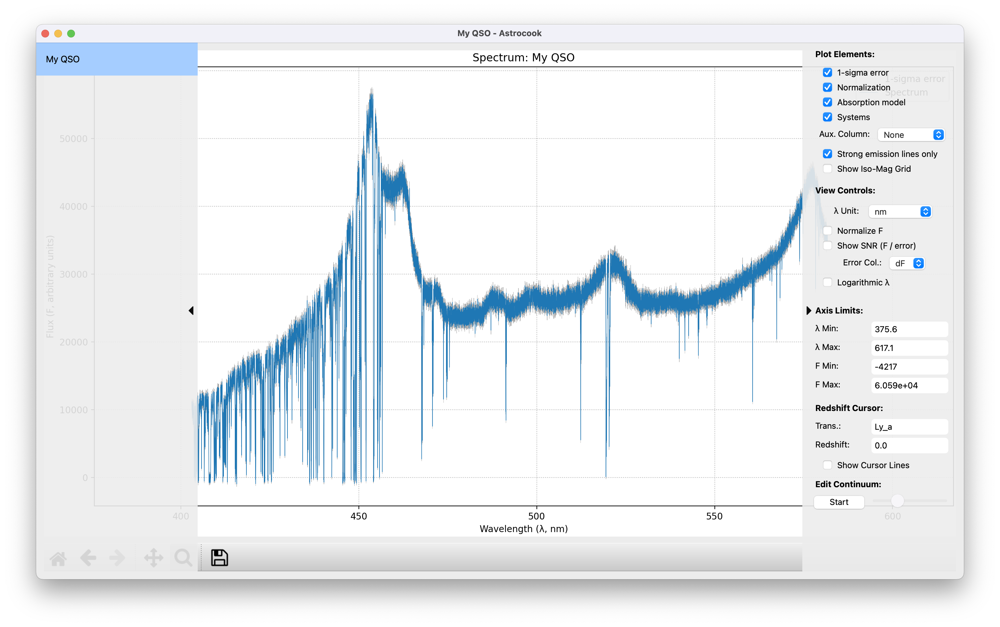

Getting Started#
Welcome to Astrocook V2! This guide will walk you through the basics of the interface: loading data, exploring your spectra, and managing your analysis sessions.
1. Loading a Spectrum#
Let’s begin by loading some data. Astrocook supports various formats, including standard FITS files and its own archive formats (.acs, .acs2).
Launch Astrocook. You will be greeted by the welcome screen.
Go to the menu bar and select File > Open Session… (or press
Ctrl+O/Cmd+O).Select your spectrum file. You can select multiple files at once if you want to load several observations simultaneously.
Once loaded, the interface will come alive. The central area displays your spectrum, while two sidebars provide control over your data and visualization.

What’s Next?#
Now that you are comfortable with the interface, you are ready to manipulate your data. Check out the Editing Data tutorial to learn how to clean up your spectra.